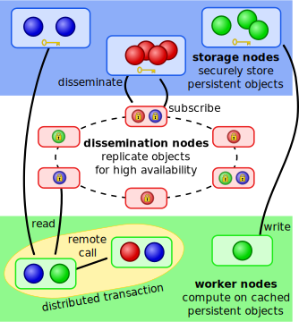
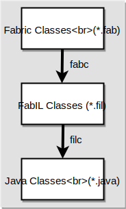
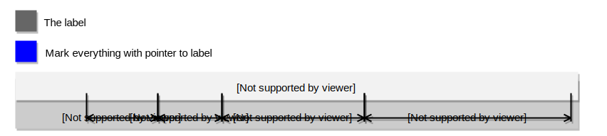
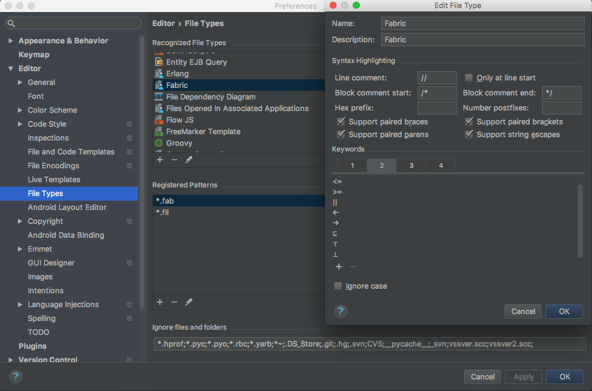
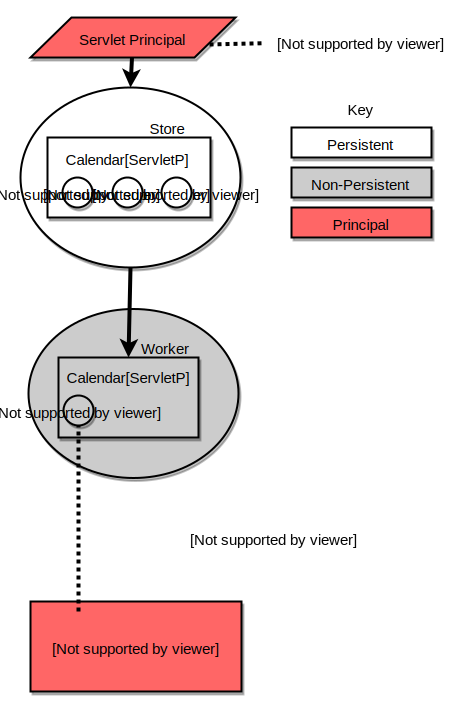

Introduction
This site's main purpose will be to walk a new user through the different steps of creating a basic Fabric application.This is not meant to be a replacement for the Fabric manual, but supplementary material of a more hands-on nature.
Language Features
Fabric is a language designed to enforce information flow policies during both compile and runtime across multiple domains which could have mutual distrust. The language is designed to follow the same trust assumption as what is used for the internet: "trust nobody." Hence, it does not care which nodes enter the "Fabric" since any node can delegate authority or access control to specific nodes (principals). This idea is highly useful for current issues in Cross Domain Assurance, allowing for the sharing of valuable data, both computations and information, in a way which strongly enforces both confidentiality and integrity expectations.There any many valuable and novel features that exist within the language which sets it apart from both prior implementations of distributed systems, which might focus heavily on either persistence or information flow. A list of such features, some of which will be described in more detail, are as follows:
- persistent storage
- data shipping
- function shipping (remote method calls)
- access control labels on objects
- capability to grant authority to principal over classes and/or specific methods
- capability to delegate authority from one principal to another
- optimistic atomic transactions allowing for rollback when encountering various issues
- sophisticated transaction bookkeeping and management

Compilation Structure
Fabric classes are written as .fab files, and these files enforce information-flow policies. The Fabric compiler, fabc , compiles Fabric classes first into the Fabric Intermediate Language, and further compiles the code using the filc compiler into Java so that the JVM can recognize the code.
Sometimes it is useful to write some classes in the intermediate language, the .fil files, when you do not care about the security labels or policies and need more flexibility in the language. Though FabIL classes do not enforce information-flow security, they can still create Fabric objects that do. For more information regarding this please refer to the manual.
Setting Up Your Application
Generally, Fabric applications are built using Apache Ant, which you should have installed to get Polyglot, Jif, and Fabric compiled and ready for use.Apache Ant Build Files
The build.xml file, typically consists of something along the lines of:
<!--
**********************************************
Fabric Calendar Apache Ant Build File
**********************************************
-->
<project name="calendar" default="build-all" basedir=".">
<description>
Fabric Calendar Application
</description>
<!--*****************
Global Properties
*****************-->
<property file="etc/build.properties" />
<import file="${fabric.home}/common.xml" />
<import file="${fabric.home}/src/lib/sif/common.xml" />
<import file="${fabric.home}/src/lib/collections/common.xml" />
<dirname property="calendar.home" file="${ant.file.calendar}" />
<!--****************
Cleaning Targets
****************-->
<target name="clean" description="remove generated files">
<delete dir="${calendar.home}/classes" />
</target>
<target name="clobber" depends="clean" description="remove generated files and states of stores">
<delete dir="${calendar.home}/var" />
</target>
<!--*******************
Compilation Targets
*******************-->
<target name="build-all" depends="build-calendar" />
<target name="all" depends="build-all" />
<target name="build-calendar" depends="sif" description="builds the Fabric Calendar Application" >
<fabc dest="${calendar.home}/classes">
<arg value="-sourcepath" /> <arg value="${calendar.home}/src" />
<arg value="-cp" /> <arg pathref="sif.classpath" />
<arg value="-cp" /> <arg pathref="collections.classpath" />
<arg value="-cp" /> <arg pathref="lib.classpath" />
<arg value="-cp" /> <arg value="${calendar.home}/classes" />
<arg value="-addsigcp" /> <arg pathref="sif.sigcp" />
<arg value="-trusted-providers" />
<fileset dir="${calendar.home}/src" includes="**/*.fab" />
</fabc>
<filc dest="${calendar.home}/classes">
<arg value="-sourcepath" /> <arg value="${calendar.home}/src" />
<arg value="-cp" /> <arg value="${calendar.home}/classes" />
<fileset dir="${calendar.home}/src" includes="**/*.fil" />
</filc>
</target>
</project>
Here, the application and default build behavior is declared at the top. Then, in the section labeled "Global
Properties" we have links to any necessary property folders or common.xml (build)
files. In this example, we had to create a build.properties file in etc directory
to hardcode the path to the $FABRIC (the fabric home directory), since Ant
on our environment does not have fabric.home variable set.Afterwards, the cleaning behavior is set to remove any generated *.class files in classes and also generated files and states of stores in var
Next, in the compilation targets section, we first use fabc Fabric compiler, and grabbing any .fab file, we compile the respective classes into our application's classes directory. Then, we do the same for the .fil files by using the filc FabIL compiler. All necessary class paths, source paths, signatures, and trusted providers are passed as arguments. Though our application depends on the SIF package, the implementation of Servlet for Information Flow, and therefore uses the respective class paths, most applications will not require this.
Another useful thing to know is that you can use <arg value="-h" /> as an argument to the fabc or filc compiler to see other possible argument options.
Shell Scripts
Fabric applications generally use executables in the bin directory to start the nodes relating to their application and to specify entry points for various components needed to operate the distributed application. Many of the examples utilize a script which performs some form of initialization for the application's state. This is often pointed at a FabIL file which creates the necessary stores and principals.Then, there are usually scripts that start worker nodes and likewise scripts that start storage nodes. Often, these couple with scripts to run the respective nodes in xterm, a standard terminal emulator.
Store
The storage nodes in Fabric are designed to be persistent storage for Fabric objects, and these nodes allow for the provision of these objects to both worker nodes and the dissemination layer.The store should group objects by similar security policies. This allows the store to easily perform the data shipping necessary to cache objects at any requesting node who has the associated access control labels.
Persistence
Storage nodes can be started with terminal commands, or with executables assuming the developer has created these shell scripts. Upon starting the store node, the node will first attempt to read in any storage files on the machine with the expected store name. If it exists, it will load the persistent data from there. Otherwise, it will simply create a new store from scratch. When a storage node is properly shutdown, without using a kill process command, then it will make sure to write all of its data in serialized form to its associated storage file. (Supposing the attacker has access to the store, could he read the store's information for himself?)Implementation Example
Here, we explore a simple implementation of using a Fabric store:
// Get a reference to a store by its name
Store store = FabricWorker.getWorker().getStore("storeName");
Once we have the store, we can access objects from within the store or instantiate objects and add them
to the store. In order to do this, consider that we want to know if we have a custom object type in our
store already. Then, we could grab it from the root node of the store's map by using its key (a string
of our choosing). Afterwards, we ensure that the retrieved object is of the type we wanted, and if so we
can cast it to that object type and save it for use in the application. If it doesn't exist, or if it is
not of the expected type, then we can create the object by doing a remote call of the custom object's
constructor at the store; and afterwards, we add this object to the store's map with the key we choose:
if (store != null)
{
Map rootMap = store.getRoot();
if (rootMap != null)
{
Object obj = rootMap.get("customObjectMapKey");
CustomObject custom = null;
if (obj instance of CustomObject)
{
custom = (CustomObject) obj;
}
else
{
custom = new CustomObject@store();
rootMap.put("customObjectMapKey", custom);
}
}
}
It is also possible to do the function shipping of a constructor requiring arguments:
custom = new CustomObject@store(arg1, arg2, arg3);
The above examples all deal with persistent objects at stores, but we can also have objects at a worker
node's non-persistent local store, which can be accessed in the following way:
FabricWorker.getWorker().getLocalStore();
(** What is the good of having these local objects? )Worker
The worker nodes are what perform computations in Fabric, either on their own local objects or on copied objects that could be from other worker nodes or storage nodes. Fabric's computations are done atomically, within transactions. This allows actions optimistic transactions to be rolled back as needed if a different node which had not yet finished computation changed an object within the transaction. This allows consistency to be guaranteed for Fabric objects across all nodes. It is possible for a worker node to simultaneously be a storage node, if so desired. A construct called atomic is given in the syntax for handling the atomic transactions, for example:
protected SessionState{*lbl} createSessionState{*lbl}
(
label{*lbl} lbl,
String{*lbl} id,
SessionPrincipal{*lbl} session
)
{
atomic
{
if ( _localStore != null &&
_localStore equiv worker$ &&
lbl <= new label{⊤→worker$} &&
new label {⊤←worker$} <= lbl )
{
return new SessionState@_localStore(id, session);
}
return null;
}
}
Labels
Some times Fabric's syntax can be rather hard to visually parse, especially for someone new to the language. Here is a breakdown of the various components in a concrete example:
Arguments: the label is passed as an argument, and currently the compiler needs to know that the label is labeled by itself, so we use a pointer. Similarly, the string argument which possibly is a date in string format also gets labeled with the pointer.
Method: the method call is similarly labeled with the pointer, to mean that this method requires that the caller has the same authority as the label passed to the method.
Return type: the return type is a Date object, instantiated with the label, and likewise we label the object with a pointer to the label.
Exception: the thrown exception could leak information, and hence we also label it with the pointer to the label. When doing this notation, the compiler requires that you use a pair of parentheses to encase the exception type and respective label.
[Printable version of table found in Official Fabric Manual]
Where Clauses
Where clauses can be employed by Fabric methods and constructors to add constraints to their calls, and this is often useful for ensuring that only intended data is leaked when calling these methods. Possible where clauses include:| data from label p may flow to label q | p ⊑ q | {p→} ⊑ {obj1→} |
| principals p and q are the same principal | p equiv q | |
| the caller of the method is principal p | caller(p) |
Instantiation
Class Constructors and Methods In Fabric, we are able to limit who may call a method or constructor by either labeling the method with an information flow policy or by using a where class; for example, stating that the caller of the method must be the principal from the session request:
public final void invoke{*lbl}( label{*lbl} lbl, Request[servP]{*lbl} req )
throws (ServletException{*lbl;req.session←})
where caller(req.session),
lbl <= {req.session→}
{
...
Often times, it can be helpful to write methods that can be called from a static context to avoid having
to deal with information flow leaks from the method caller's program counter. However, if this is done,
then will obviously not be able to refer to the information flow policy of an instantiated object, and may
have to use pointers to a label passed within the method arguments.
// TODO: how to instantiate an array with policy labels
Things to Note
Fabric applications are distributed, meaning that there can often be intricate flow policies and access labels restricting how methods, and also objects, can interact. This is could be dependent on principals not wanting to reveal too much information via their program counters when methods throw exceptions, return objects, or instantiate new objects. Similarly, a principal may not want secrets from their objects to be revealed to stores that they do not trust. This means that it can be useful to think about the overall architecture and begin sketching access policy diagrams and flow diagrams to model what you want your system to do, and what you want to ensure it does not do. Doing this helps also understand where the main entrypoints are for the application and how various distributed nodes interact, which can become confusing in convoluted applications.Common Compiler Issues
At the same time, the compiler likes to throw fits for reasons that may not always seem obvious. While some of these errors could be compiler errors or lower level errors in the language upon which Fabric is built, especially considering that the language is still in development and at the moment has some known bugs, this does not mean that all errors are bad. In fact, much of the errors are protecting you from accidentally leaking sensitive information that you might not have thought to protect. Some times, fixing one bug can lead to needing to completely revamp numerous other methods, because the previous labels were too restrictive, for example. Hence, it is sensible to program in small units so that you do not have to follow a slew of seemingly nonsensical bugs.The fabc compiler has issues if you:
- Try to save your principals for your app in any other package besides fabric.principals
- Among different classes, try to keep your variable names unambiguous because the compiler may make a mistake as to which object type a string representation of a variable is depending on if it has previously seen a string of that object type.
Integrated Development Environments
Fabric has an IDE [link] which can be built if you have the following setup: Unfortunately, the README for the Fabric IDE is not yet created, but intuition regarded how to use it in Eclipse can be acquired by the prerequisite Polyglot IDE's README file.Otherwise, you could use Intellij, which will not allow for as optimal IntelliSense, but you can still get keywords and various Fabric related symbols highlighted. First, go to Preferences > Editor > File types, and then create a new file type for Fabric (and FabIL). Register the *.fab and *.fil patterns. Then, click the pen tool under the panel containing the Recognized File Types and add your desired highlighted keywords in the four categories.

Calendar Example
A calendar application was written in Fabric's precursor language, Jif. This prior calendar, based on Jif's language capabilities, was not distributed. Porting the calendar to the Fabric language meant requiring an overhaul to the architecture.The original calendar implemented a mySQL database to achieve persistence, and setting up the database was a requirement for running the application. The actions for the calendar required accessing the database by authorized principals (calendar users). However, in the Fabric language, there is an object implemented with the intention of serving as a persistent database. This object, the store, follows the many new distributed design decisions implemented in the Fabric language.
Now, instead of implementing a database, and using database calls to achieve the functionality of the calendar, we simply need to ensure that a storage node is running somewhere with the persistent features required by the calendar. In essence, this storage node acts as the top principal with the greatest label {⊤→⊤;⊤←⊤}, allowing the storage to perform all actions on any calendar in an active user session.
A worker node is spun up for any individual user wanting to access the calendar. This follows the Fabric language premise which states that objects do not "instantiate" but rather join the overall "Fabric." The worker node, therefore should allow a user to either join the calendar (a future wanted capability) or authenticate a session if they have already joined the calendar previously. With both of these actions, we are able to use Fabric's idea of remote calls, accessing the storage node by invoking appropriate methods at the store.
Adding a user is a feature that would be nice to implement, and may become another method with the least label that the store allows. Of course, the store will check that the username is valid and not already in use, especially considering the username is operating as a user-id, or key, for access to all of the user's objects within their calendar. At this point, unsure whether .fil classes are necessary of if perhaps we ought to first hard-code this functionality until the other portions of the calendar are implemented?
Within the HelloServlet class of the AuthWiki project, there does seem to be the desired capability implemented. Unfortunately, I could not get the project to compile, so I was not able to run it to verify if it was actually doing what I hope it does, namely creating a new user after the application state has been initialized (during runtime) and adding him or her to the list of users.
Preliminary Design Ideas
From some examples, such as the Box class in MapServ, it seemed that objects were deep copied from one principal to the other. Perhaps for the calendar, something like this would work:
Wondering if the following is a reasonable idea for the architecture:
Calendar package
- Main - Main entrypoint for application (hopefully)
- Calendar - The calendar object
- Config - Configuration for the calendar
- FrontPage - Front page of servlet
- User - User object
- Event sub package
- Event
- CreateEvent
- CreateEditEvent
- FinishEditEvent
- Principal sub package
- ServletPrincipal - can act on all servlet related mutable objects
- UserPrincipal - can only act on objects that UserPrincipal has CI rights
- Session sub package
- CalendarSessionState
- ChangeDisplayDateAction
- EditEventAction
- FinishEditEventReceiver
- FinishEditingEvent
- SelectDisplayUser
- ShowCalendar
- ShowCalendarSessAction
- Utility sub package
- DateUtil
- Date
- Declassifier
Current Design Ideas
Calendar Package- CalendarServlet - Main entrypoint for the web application
- Calendar - An abstract calendar principal, reflecting the broker in travel application
- Config - Configuration for the calendar
- FrontPageAction - Front page of servlet
- User - User object
- Event sub package
- Event
- CreateEvent
- CreateEditEvent
- FinishEditEvent
- Session sub package
- CalendarSessionState
- ChangeDisplayDateAction
- EditEventAction
- FinishEditEventReceiver
- FinishEditingEvent
- SelectDisplayUser
- ShowCalendar
- ShowCalendarSessAction
- Utility sub package
- DateUtil
- Date
- Declassifier
- ServletPrincipal - can act on all servlet related mutable objects
- UserPrincipal - can only act on objects for which UserPrincipal has privilege
- ServletPrincipal - can act on all servlet related mutable objects
- UserPrincipal - can only act on objects for which UserPrincipal has privilege
// TODO: Edit this section!
References
- [1]
Owen Arden, Michael D. George, Jed Liu, K. Vikram, Aslan Askarov, and Andrew C. Myers. Sharing mobile code securely with information flow control. In Proc. IEEE 2012 Symposium on Security and Privacy, pages 191–205, San Francisco, CA, USA, May 2012. Software release at http://www.cs.cornell.edu/projects/fabric/.
- [2]
Michael J. Carey, David J. DeWitt, and Jeffrey F. Naughton. The OO7 benchmark. In Proc. ACM SIGMOD 1993 International Conference on Management of Data, pages 12–21, Washington, DC, USA, May 1993.
- [3]
Stephen Chong, K. Vikram, and Andrew C. Myers. SIF: Enforcing confidentiality and integrity in web applications. In Proc. 16th USENIX Security Symposium, pages 1–16, Boston, MA, USA, August 2007. See http://www.cs.cornell.edu/jif/sif/.
- [4]
Jed Liu, Michael D. George, K. Vikram, Xin Qi, Lucas Waye, and Andrew C. Myers. Fabric: A platform for secure distributed computation and storage. In Proc. 22nd ACM Symposium on Operating System Principles (SOSP), pages 321–334, Big Sky, MT, USA, October 2009. Software release at http://www.cs.cornell.edu/projects/fabric/.
- [5]
Andrew C. Myers. JFlow: Practical mostly-static information flow control. pages 228–241, San Antonio, TX, USA, January 1999. Software release at http://www.cs.cornell.edu/jif/.